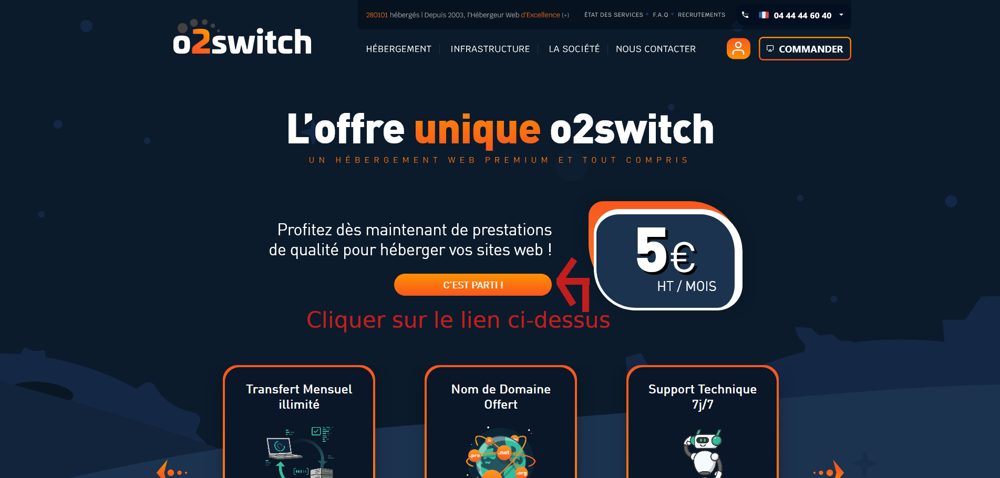
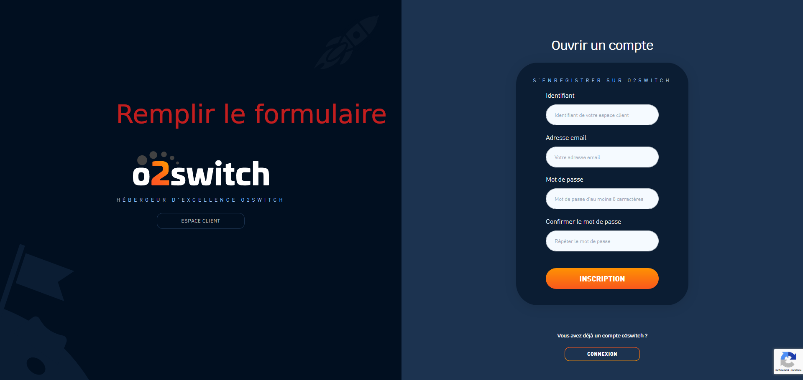
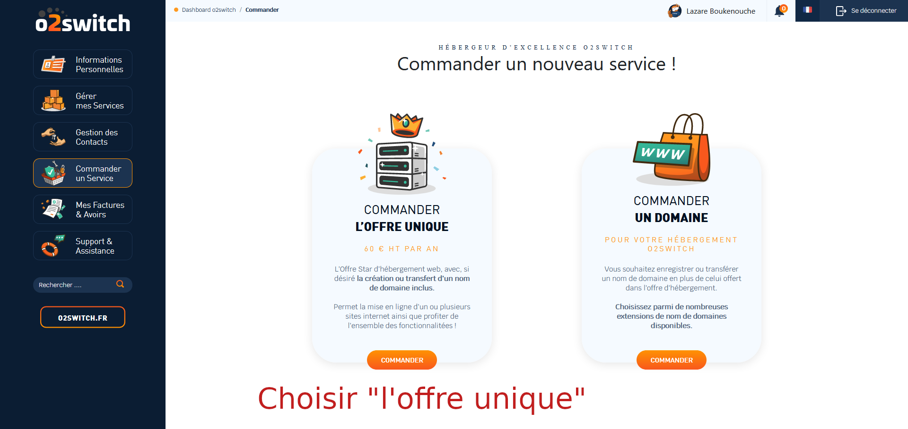
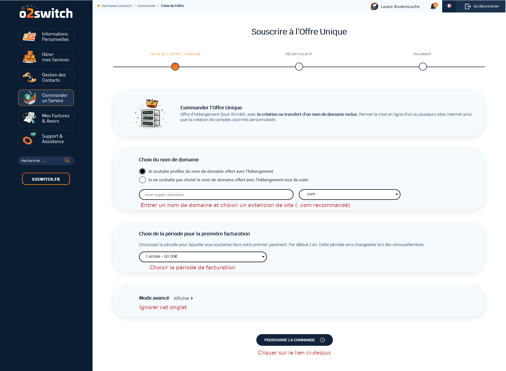
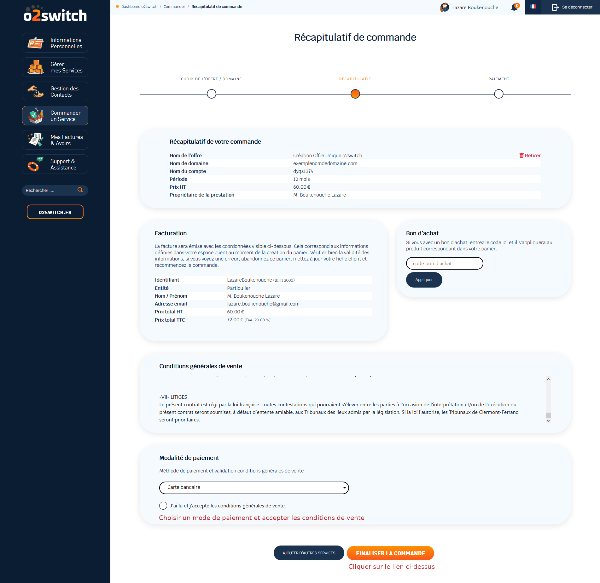

Avant d'installer Wordpress, il faut acheter un nom de domaine et souscrire un hébergement pour le site.
Les étapes 1 à 6 détaillent l'achat du nom de domaine et la souscription à l'hébergeur.
L'étape 7 détaille l'installation de Wordpress.
Etape 1
Etape 2
Etape 3
Etape 4
Etape 5
Etape 6
Etape 7
Une fois le règlement effectué, vous aurez votre nom de domaine et votre hébergement.
Il ne nous reste plus qu'a installer Wordpress. Pour ce faire, il faudra aller récupérer les informations de votre compte qu'O2switch vous enverra.
Attendez de recevoir un mail de confirmation. Il faut compter quelques minutes pour recevoir.
Accéder à votre boite mail contenant vos informations récapitulatives
Récuperer les coordonnées pour se connecter au Cpanel, puis s'y connecter
Sur la nouvelle page, chercher le logo Wordpress et cliquer dessus.
Le formulaire d'installation du module Wordpress s'ouvrira, il faudra entrer et/ou modifier quelques champs de texte.
- Tout d’abord, tapez le nom de votre site sans espace : par exemple, “nomdevotresite.com”.
- Ensuite, effacer “wp” et laissez le champ vide.
- Puis, écrivez le nom de votre site avec des espaces : par exemple, “nom de votre site".
- Ensuite, faites une description courte de votre site
- Ne cochez pas la case juste après.
- Tapez votre identifiant. Ce n’est pas celui d’O2switch dans votre email. C'est celui qui servira à entrer dans l'interface d'administration de Wordpress. Je vous conseille de le sauvegarder avec précaution.
- Choisissez un mot de passe suffisamment sécurisé : il faut qu’il soit indiqué “strong (100/100)”. C'est la deuxième information essentielle pour se connecter à l'interface d'administration de Wordpress .
- Indiquez une adresse email, une que seul vous pouvez vous connecter.
- Cliquer sur Installation
Votre site est désormais en ligne !